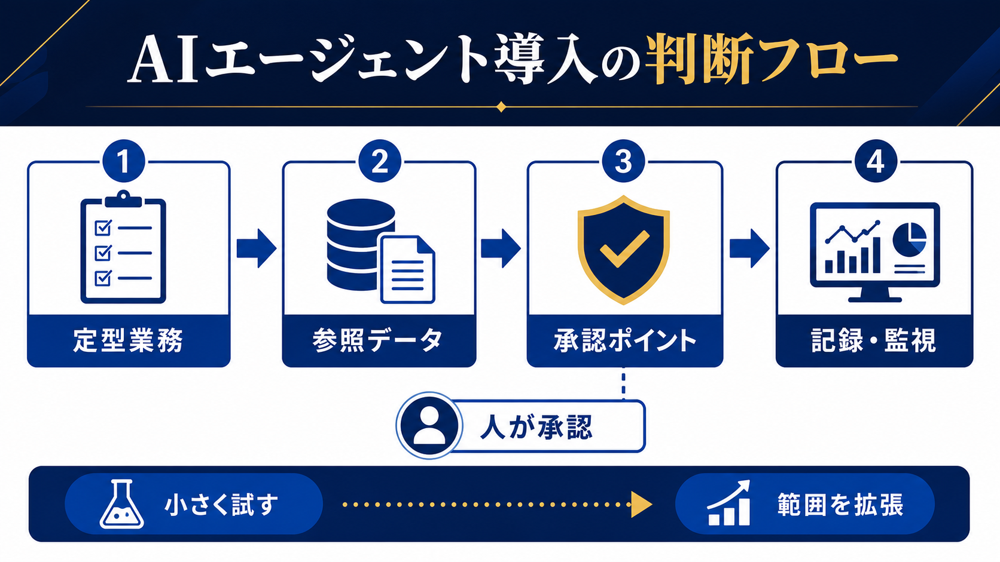

AI OPERATIONS / AGENT DESIGN
AIエージェントとは？中小企業の業務で任せる範囲と導入手順
AIエージェントは、目的に沿って情報を参照し、複数の処理を進める仕組みです。便利さだけで判断せず、定型業務・参照データ・承認ポイント・記録と監視を先に設計すると、導入範囲を安全に決められます。

- チャットAIは回答中心、AIエージェントは複数の作業を目的に沿って進める
- 最初は定型度が高く、失敗時に人が止められる業務を選ぶ
- 承認・権限・ログ・切り戻しを決めないまま自動実行を広げない
AIエージェントは、目的に向けて複数の作業をつなぐ
通常のチャットAIは、入力された質問に対して文章や候補を返します。AIエージェントは、目的を受けて必要な情報を参照し、手順を組み立て、複数のツールや処理を使い、結果を報告する仕組みとして説明できます。実際の機能はサービスによって異なるため、「どこまで自動で実行するか」を個別に確認することが重要です。
| 仕組み | 主な役割 | 人が決めること |
|---|---|---|
| 生成AI | 文章、要約、分類、アイデアの生成 | 材料と出力の確認 |
| チャットボット | 質問への回答やFAQ検索 | 回答範囲とエスカレーション |
| RPA | 決まった画面操作の自動実行 | 手順と例外処理 |
| AIエージェント | 目的に沿った複数工程の実行 | 権限、承認、停止条件、ログ |
自律性が増えるほど、管理すべき範囲も増える
AIエージェントの導入で重要なのは、「すべて自動化できるか」ではなく、失敗したときにどこで止まり、誰が確認し、元に戻せるかです。顧客への送信、契約・請求の確定、採用判断、権限変更など、影響が大きい処理は人の承認を残します。
参照する
許可されたデータだけを見る。
提案する
分類・下書き・次の処理を出す。
承認する
人が確認してから実行する。
参照データの更新日、権限の範囲、AIの出力を保存する場所を決めます。機密情報や個人情報を扱う場合は、サービス条件と社内ルールを確認し、入力を必要最小限にします。AI導入のリスクも併読してください。
最初に任せやすいのは、定型度が高く確認できる業務
AIエージェントの最初の候補は、入力と手順が決まり、処理結果を人が短時間で確認でき、失敗時に手動へ戻せる業務です。メールの分類、社内問い合わせの振り分け、会議後のタスク整理、定型レポートの下書きなどが候補になります。
| 候補 | エージェントの補助 | 残す承認 |
|---|---|---|
| 問い合わせ | 分類・回答案・担当通知 | 顧客向け回答の送信 |
| 営業事務 | 依頼内容の整理・台帳更新案 | 金額・納期・顧客への連絡 |
| 社内報告 | データ収集・要約・下書き | 数値と経営判断 |
| ナレッジ管理 | 質問分類・記事候補の作成 | 公開内容と権限 |
導入前に4項目を決める
AIエージェントの説明を聞いてすぐツールを選ぶのではなく、対象業務の境界を定義します。①参照してよいデータ、②実行してよい操作、③人の承認が必要な地点、④実行履歴と失敗時の戻し方を、担当者と一緒に書き出します。
- 定型業務：開始条件、完了条件、例外を明記する。
- 参照データ：最新版の場所、権限、更新担当を決める。
- 承認ポイント：送信、確定、公開、削除、支払いなどを止める。
- 記録・監視：入力、判断、実行、エラー、承認者を追えるようにする。
30日で小さく試し、ログから広げる
最初の試行では、1業務・1チーム・1つのデータ範囲に絞ります。1週目に業務と例外を整理し、2週目に提案だけを出す状態で試し、3週目に承認後の実行を確認し、4週目に時間・修正・エラー・停止回数を見て判断します。成功しても、そのまま対象業務を増やさず、権限と監視を見直します。
| 指標 | 意味 | 広げる判断 |
|---|---|---|
| 処理時間 | 人の作業が減ったか | 確認を含めても短いか |
| 修正件数 | 出力の品質 | 原因が特定できるか |
| 停止・差し戻し | 例外への対応 | 人が止められるか |
| ログ欠落 | 追跡可能性 | 記録なしで実行されていないか |
AI導入の進め方と同じく、導入の目的は自律性を増やすことではなく、業務の結果を安定させることです。効果が確認できない場合や、確認工数が増えた場合は、提案だけの運用へ戻します。
失敗時は「提案だけ」の運用へ戻す
AIエージェントが想定外の処理をした場合、担当者が手作業へ戻れることが重要です。自動送信や自動更新を止め、実行ログと参照データを確認し、影響範囲を責任者へ報告します。原因を直すまで対象範囲を広げず、必要ならAIを提案・下書きだけに戻します。
- 停止：実行権限、連携、外部送信を止める。
- 確認：いつ、どのデータを参照し、何を実行したか追う。
- 復旧：手動の正規手順で業務を完了させる。
- 再発防止：権限・承認・入力データ・例外のどこを直すか決める。
停止回数が多いこと自体が失敗とは限りません。停止できたか、原因を記録できたか、同じ条件で再発しなかったかを見て、自律実行の範囲を判断します。
- 経済産業省「AI事業者ガイドライン」（2026-07-13確認）
- IPA「AIの利活用、AIによるDXの推進」（2026-07-13確認）
- 個人情報保護委員会「生成AIサービスの利用に関する注意喚起」（2026-07-13確認）
よくある質問
AIエージェントはチャットボットと同じですか？
同じではありません。チャットボットは質問への回答が中心ですが、AIエージェントは目的に沿って複数の処理をつなげる仕組みです。サービスごとの機能差は確認が必要です。
AIエージェントに業務を全部任せられますか？
処理の影響、データ、権限、例外によって異なります。最初は提案や下書きに置き、人の承認とログを確保してから範囲を検討します。
導入効果は何で測りますか？
処理時間、確認時間、修正、停止、エラー、ログの欠落、手動へ戻した回数を記録し、導入前と比べます。